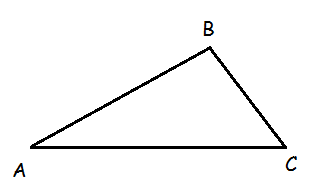
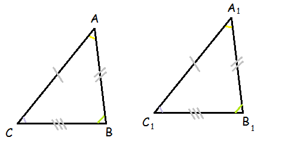

Треугольник — это геометрическая фигура, образованная тремя отрезками, которые соединяют три
нележащие на одной прямой точки.

Три точки, образующие треугольник, называются вершинами треугольника, а отрезки —
сторонами треугольника.
Стороны треугольника образуют в вершинах треугольника три угла. Другими словами, треугольник —
это многоугольник, у которого имеется ровно три угла.
Обозначение треугольника:
ΔABC или ΔBCA или буквы вершин в любом другом порядке.
Обозначение угла:
∠A, ∠BAC или ∠CAB.
Обозначение стороны:
AB или BA.
Сторону, которая лежит напротив угла, называют противолежащей углу и угол называют
противолежащим стороне.
Углы, которые имеет одну общую сторону, называют прилежащими этой стороне.
Сумма сторон треугольника называется периметром.
Если два треугольника можно совместить наложением, их называют равными. При этом совпадают все
стороны и все углы.
Если два треугольника равны, то элементы (стороны и углы) одного треугольника соответственно
равны элементам другого треугольника.
То есть противолежащие стороны соответственно равных углов тоже равны, и противолежащие углы
соответственно равных сторон равны.

Обозначение равных треугольников:
ΔABC = ΔA1B1C1, ΔBCA = ΔB1C1A1
или буквы вершин в любом другом порядке, но, соблюдая следующее: в
каком порядке названы вершины одного треугольника, в таком же порядке называют соответствующие
вершины равного треугольника.
В практике не всегда можно применить наложение для сравнивания фигур. Чаще необходимо
ограничится измерением некоторых элементов фигур и по этим измерениям судить о равенстве фигур.